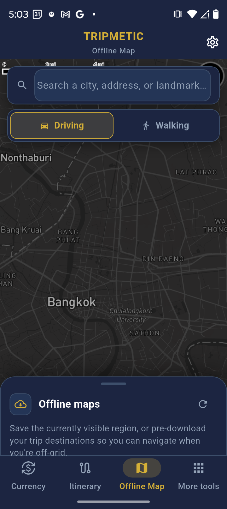
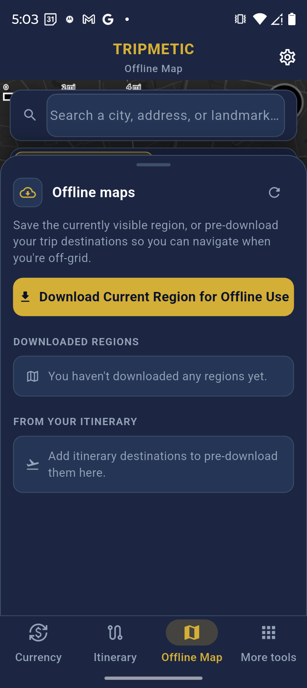
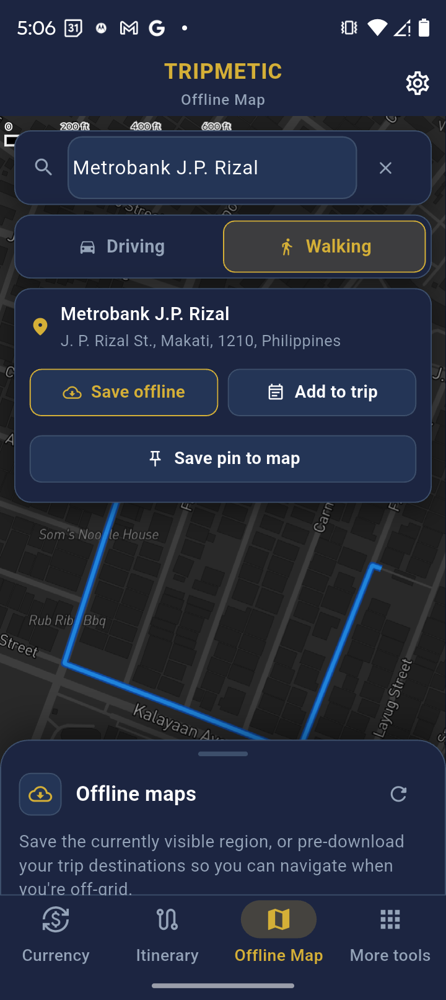

The Tripmetic Offline Map is a CFO-grade tool built specifically for international travelers and digital nomads. When you land in a foreign country, you shouldn't have to scramble for an expensive local SIM card just to find your hotel.
By following this guide, you will learn how to download high-resolution map regions and place custom markers so you can flawlessly find your way around when you do not have access to Wi-Fi or mobile service.
How to Prepare Your Map (While on Wi-Fi)
To make the offline map work, the app uses a dual-layer system. First, you download the "street canvas" (the region). Second, you drop your specific pins (points of interest) onto that canvas.
1 Search and Center Your Destination
Open the Offline Map tab from the bottom menu. By default, the map uses your device's GPS to find your current location. Tap the search bar at the top of the screen and type the name of the city or neighborhood you are traveling to (e.g., "Makati, Philippines" or "Shibuya, Tokyo"). Press search, and the map will automatically fly to that region.

2 Download the Map Region
Once you are looking at the city you are visiting, swipe up on the dark blue "Offline maps" card at the bottom of the screen. Tap the large gold button labeled "Download Current Region for Offline Use". A progress bar will appear. Wait until you see the success notification before leaving this screen.
Note: This saves the vector data for all streets, parks, and buildings currently visible on your screen directly to your phone's hard drive.

3 Add a Point of Interest (Crucial)
Downloading the streets is only half the battle. To easily find your way around without Wi-Fi, you must mark your important locations.
- Type the specific name of your hotel, an important meeting spot, or a landmark into the search bar (e.g., "Gramercy Residences").
- When the search result appears, tap the "Add to trip" button next to the location name.
- The app will save this specific Point of Interest to your local device storage.

Navigating on the Ground (Without Wi-Fi or Mobile Service)
Once you step off the plane or leave your Wi-Fi zone, your phone may lose internet access, but your Tripmetic app is fully prepared.
- Viewing the Map: Simply open the Offline Map tab. Because you downloaded the region in Step 2, the streets, blocks, and physical geography will load instantly, even in Airplane Mode.
- Finding Your Marks: Because you saved a point of interest in Step 3, you will see a prominent pin marking your hotel or meeting spot floating directly over the offline street grid.
- Locating Yourself: As long as your phone's GPS chip is turned on (which works independently of mobile service), a blue dot will show your physical location on the map. Simply walk towards the pin you dropped to reach your destination.
Troubleshooting
Translating text like "123 Main Street" into GPS coordinates requires pinging an external server. You cannot search for brand-new, unsaved addresses while you do not have mobile service. You must search and "Add to trip" while still on Wi-Fi.
This means the region was not successfully downloaded, or you have scrolled the map outside of the bounding box of the area you downloaded. Reconnect to Wi-Fi, return to the location, and tap the download button again to cache the vector tiles.
If you see this message, ensure you have updated to the latest version of Tripmetic from the App Store or Google Play.